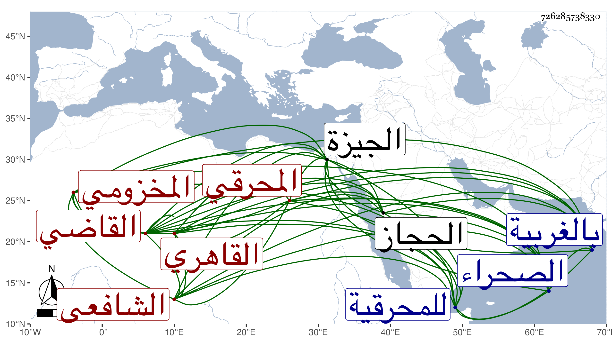

0902Sakhawi.DawLamic.ITO20230111-ara1.EIS1600.726285738330
Biography ID: 726285738330
394
محمد بن أبي بكر بن أيوب القاضي فتح الدين أبو عبد الله بن القاضي زين الدين بن نجم الدين المخزومي المحرقي نسبة للمحرقية قرية بالجيزة القاهري الشافعي والد البدر محمد أبي البهاء أحمد وأخيه المذكورين . ولد تقريبا سنة خمسين وسبعمائة كما كتبه لي حفيده البهاء ويحتاج إلى تحقيق وقال لي إنه ولي نظر المسجد النبوي وكذا الجوالي في دولة الظاهر برقوق ونظر سعيد السعداء في أيام الأشرف ثم الظاهر ونظر مواريث أهل الذمة ثم وقفت على توقيع باستقرار الظاهر برقوق له في وظيفة استيفاء الحرم المدني ويقال لها نظر ديوان الخدام به بعد موت الشهاب أحمد السندوبي في ربيع الآخر سنة سبع وتسعين ثم أضيف إليه نظر الجوالي المصرية والمواريث الحشرية من أهل الذمة واستيفاء البيمارستان المنصوري واستقر به ابنه الناصر فيها على عادته في ثاني شوال سنة عشر ثم أشرك معه . المؤيد في الجوالي مرجان الخازنداري المؤيدي في ربيع الثاني سنة ست عشرة وعين المعلوم عن نظرها عشر مثاقيل ذهبا ثم أضاف إليه الظاهر جقمق أوائل سلطنته في ثاني جمادى الأولى سنة اثنتين وأربعين نظر سعيد السعداء وكان باشره في إمرته نيابة عنه سنين ورأى جودة تصرفه فخصه الآن بالأصالة فيه ثم كتب له بذلك كله في مستهل رمضان سنة خمس وأربعين وباستقرار ولده البدر فيه بعده مضافا لما هو باسمه ومن ذلك شهادة أوقاف الخانفاه ونيابة النظر بها على الجوالي ويكون ذلك باسم ولديه المحب محمد والبهاء أحمد ثم في سابع عشرى شوال سنة سبع وأربعين كتب باستقرارهما في الشهادة والنظرين ومن مات منهما انتقل نصيبه للآخر وبتقرير أبيهما على تلك الوظائف كلها حسبما كانت معه في الأيام الأشرفية . ولما ولي صاحب الترجمة الجوالي في أيام الظاهر امتدحه الشهاب الحجازي بقصيدة بائية في ديوانه رأيتها بخطه وكذا مدحه غيره ، وحكى لي حفيده أنه اتفق أن يشبك الشعباني أحد الأمراء أودع عنده حين بعض أسفاره صندوقا كبيرا من غير إعلام أحد به وقدرت وفاته فبادر بالطلوع به إلى الناصر فرج ففتح بحضرته فكان شيئا يفوق الوصف فتعجب الناصر ومن حضره في إظهاره له وألبسه خلعة وأنعم عليه بحصة في استيوم بالغربية هي مع حفيديه إلى الآن وقد ذكره العيني وقال إنه صحب ابن سنقر أستاذ قلمطاي فقرره شاهدا عند أستاذه ثم ترقي حاله عن السلطان حتى استقر به في نظر الجوالي المصرية والخانفاه الصلاحية قال وكان مشهورا بالمباشرات عريا عن العلوم . مات في ليلة الخميس سلخ شوال سنة سبع وأربعين ودفن في مقابر الصحراء خارج باب الحديد وسماه صدقة فوهم وقال بعض المؤرخين أنه سمع من جماعة من أصحاب الحجاز ووزيرة فمن بعدهم ، وعرض العمدة علي ابن الملقن والبلقيني والعراقي والهيثمي وكان يكثر التلاوة ممتعا بإحدى عينيه ، ولم يكن ينتسب في خطه محرقيا بل يكتب محمد الشافعي ، ووصفه شيخنا في عرض ابنه بناظر الحرم الشريف النبوي ، والبيجوري بالشيخ الإمام العالم العلامة ، والبرماوي بالقضائي العالمي العاملي الرئيسي الفتحي بركة المسلمين والشمس محمد بن عبد الماجد سبط ابن هشام وابن المجدي وآخرون بل رأيت شيخنا كتب له رسالة نصها : المملوك ابن حجر يقبل الأرض وينهي استمراره على ما ألف من محبته وثنائه ووده ودعائه وأن المتفضل بها فلانا ذكر للملوك ما تفضلتم به عليه من إجابة سؤاله إلى ما عينه من الجهة القبلية إلى أن قال : ولقد سر المملوك بانتمائه إليكم والمسؤل من فضلكم تمام الإحسان ولا بد أن يحمد المخدوم عاقبة ذلك انتهى . وكفى بهذا فخرا في رياسته وجليل مكانته رحمهما الله وإيانا .
